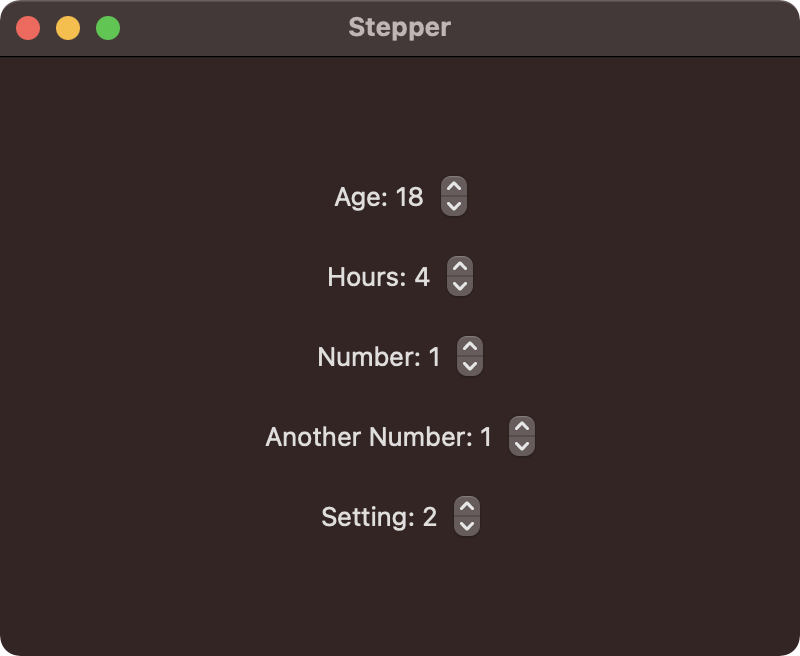

The stepper control increments and decrements a value. A closed range can be used to limit the applicable stepper values.

import SwiftUI
struct ContentView: View {
@State private var age = 18
@State private var hours = 4.0
@State private var number = 1
@AppStorage("setting") var setting = 2
var body: some View {
VStack(spacing: 20) {
// Increment or decrement `age` in range of 10-50
Stepper("Age: \(age)", value: $age, in: 10...50)
// Increment or decrement `hours` in range of 1-10 using steps of 0.25
Stepper("Hours: \(hours, specifier: "%g")", value: $hours, in: 1...10, step: 0.25)
// Increment or decrement `number` then print value
Stepper("Number: \(number)", onIncrement: {
print("on increment")
self.number += 1
}, onDecrement: {
print("on decrement")
self.number -= 1
})
// Increment or decrement `number` then print value.
// Also detect when editing begins and ends.
Stepper("Another Number: \(number)", onIncrement: {
print("on increment")
self.number += 1
}, onDecrement: {
print("on decrement")
self.number -= 1
}, onEditingChanged: { edited in
if edited {
print("edited")
} else {
print("not edited")
}
})
// Increment or decrement `setting` and save value to UserDefaults
Stepper("Setting: \(setting)", value: $setting, in: 0...5)
}.frame(width: 400, height: 300)
}
}
Gavin Wiggins © 2025
Made on a Mac with Genja. Hosted on GitHub Pages.